Evermend™ (CIA) ASD
Projetado para oclusão percutânea e transcateter de defeito do septo atrial secundário ou fechamento de fenestração de Fontan.
A linha de oclusores apresentada pela Life Solutions reúne soluções Evermend™ voltadas ao fechamento percutâneo e transcateter de diferentes defeitos cardíacos estruturais, conforme avaliação médica e documentação oficial do fabricante.
Ver modelos disponíveis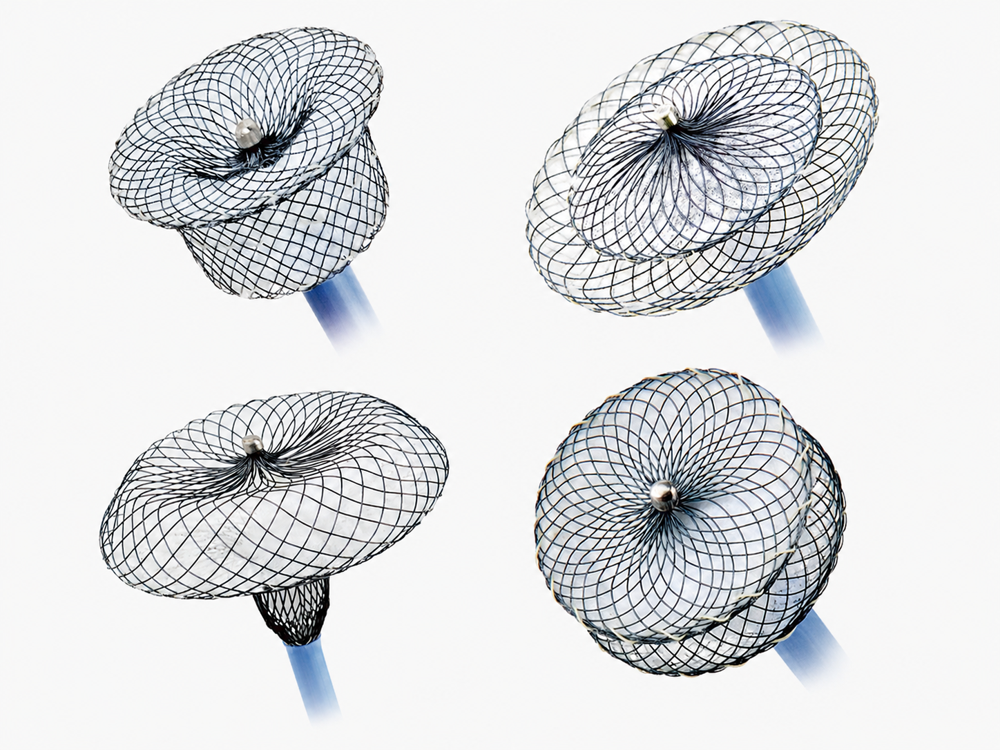
Os oclusores Evermend™ são dispositivos projetados para procedimentos percutâneos e transcateter em cardiologia congênita e estrutural. A linha contempla soluções para fechamento de defeito do septo atrial secundário (ASD/CIA), forame oval patente (PFO), persistência do canal arterial (PDA) e defeitos do septo ventricular (VSD).
De acordo com a Valflux, os dispositivos utilizam estrutura em fio de nitinol e componentes em poliéster, com foco em posicionamento adequado, apoio ao fechamento do defeito e suporte ao crescimento tecidual após a implantação.
A linha apresentada nesta página reúne quatro soluções principais da família Evermend™ para diferentes aplicações em cardiologia congênita e estrutural.
Projetado para oclusão percutânea e transcateter de defeito do septo atrial secundário ou fechamento de fenestração de Fontan.
Desenvolvido para o tratamento transcateter do fechamento de forame oval patente (PFO).
Dispositivo voltado ao fechamento percutâneo e transcateter de persistência do canal arterial, incluindo aplicação em população pediátrica jovem.
Solução para oclusão percutânea e transcateter de defeitos do septo ventricular, incluindo versões peri-membranosa e muscular.
O oclusor Evermend™ (CIA) ASD foi projetado para a oclusão percutânea e transcateter de defeito do septo atrial secundário, além de situações em que o paciente necessita do fechamento de sua fenestração de Fontan.
Sua estrutura utiliza fio de nitinol formado em dois discos, conectados por uma cintura ajustada ao tamanho do defeito. Três tecidos de poliéster auxiliam no fechamento do orifício e fornecem base para o crescimento do tecido após a colocação do dispositivo.
Segundo a Valflux, o perfil baixo e a modelagem do dispositivo são parâmetros importantes de projeto, contribuindo para entrega suave e implantação adequada após a liberação.
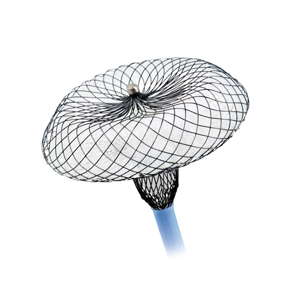
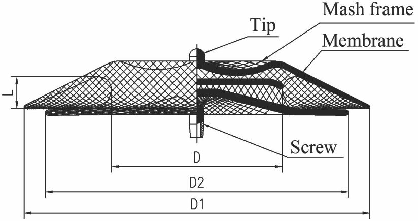
| Tamanho | Código do produto | Diâmetro da Cintura D/mm | Diâmetro do Disco Esquerdo D1/mm | Diâmetro do Disco Direito D2/mm | Comprimento da Cintura L/mm | Bainha de entrega mínima recomendada |
|---|---|---|---|---|---|---|
| KW 04 | KW041216 | 4.0 | 16.0 | 12.0 | 3.5 | 7F - 45° |
| KW 05 | KW051317 | 5.0 | 17.0 | 13.0 | 3.5 | 7F - 45° |
| KW 06 | KW061418 | 6.0 | 18.0 | 14.0 | 3.5 | 7F - 45° |
| KW 07 | KW071519 | 7.0 | 19.0 | 15.0 | 3.5 | 7F - 45° |
| KW 08 | KW081620 | 8.0 | 20.0 | 16.0 | 3.5 | 7F - 45° |
| KW 09 | KW091721 | 9.0 | 21.0 | 17.0 | 3.5 | 8F - 45° |
| KW 10 | KW101822 | 10.0 | 22.0 | 18.0 | 3.5 | 8F - 45° |
| KW 11 | KW112125 | 11.0 | 25.0 | 21.0 | 4.0 | 8F - 45° |
| KW 12 | KW122226 | 12.0 | 26.0 | 22.0 | 4.0 | 8F - 45° |
| KW 13 | KW132327 | 13.0 | 27.0 | 23.0 | 4.0 | 9F - 45° |
| KW 14 | KW142428 | 14.0 | 28.0 | 24.0 | 4.0 | 9F - 45° |
| KW 15 | KW152529 | 15.0 | 29.0 | 25.0 | 4.0 | 9F - 45° |
| KW 16 | KW162630 | 16.0 | 30.0 | 26.0 | 4.0 | 9F - 45° |
| KW 17 | KW172731 | 17.0 | 31.0 | 27.0 | 4.0 | 9F - 45° |
| KW 18 | KW182832 | 18.0 | 32.0 | 28.0 | 4.0 | 9F - 45° |
| KW 19 | KW192933 | 19.0 | 33.0 | 29.0 | 4.0 | 9F - 45° |
| KW 20 | KW203034 | 20.0 | 34.0 | 30.0 | 4.0 | 10F - 45° |
| KW 22 | KW223236 | 22.0 | 36.0 | 32.0 | 4.0 | 10F - 45° |
| KW 24 | KW243438 | 24.0 | 38.0 | 34.0 | 4.0 | 10F - 45° |
| KW 26 | KW263640 | 26.0 | 40.0 | 36.0 | 4.5 | 10F - 45° |
| KW 28 | KW283842 | 28.0 | 42.0 | 38.0 | 4.5 | 10F - 45° |
| KW 30 | KW304044 | 30.0 | 44.0 | 40.0 | 4.5 | 12F - 45° |
| KW 32 | KW324246 | 32.0 | 46.0 | 42.0 | 4.5 | 12F - 45° |
| KW 34 | KW344450 | 34.0 | 50.0 | 44.0 | 4.5 | 12F - 45° |
| KW 36 | KW364652 | 36.0 | 52.0 | 46.0 | 4.5 | 14F - 45° |
| KW 38 | KW384854 | 38.0 | 54.0 | 48.0 | 4.5 | 14F - 45° |
| KW 40 | KW405056 | 40.0 | 56.0 | 50.0 | 4.5 | 14F - 45° |
| KW 42 | KW425258 | 42.0 | 58.0 | 52.0 | 4.5 | 14F - 45° |
| Sistema de Entrega (bainha) tamanho | Diâmetro interno da bainha (mm) (Nominal) | Diâmetro externo da bainha (mm) (Nominal) | Comprimento efetivo (mm) (Nominal) |
|---|---|---|---|
| 5F | 1.83 | 2.31 | 856 |
| 6F | 2.16 | 2.64 | 856 |
| 7F | 2.49 | 2.97 | 856 |
| 8F | 2.82 | 3.33 | 856 |
| 9F | 3.15 | 3.66 | 856 |
| 10F | 3.48 | 3.99 | 856 |
| 12F | 4.17 | 4.70 | 856 |
| 14F | 4.83 | 5.38 | 856 |
O PFO (forame oval patente) é uma comunicação entre o átrio esquerdo e o átrio direito. Quando a pressão no átrio direito se torna temporariamente mais alta que no átrio esquerdo, o forame oval pode se abrir e permitir a passagem de sangue e êmbolos.
O oclusor Evermend™ (PFO) ASD Customizado foi projetado para o tratamento transcateter do fechamento de PFO. O dispositivo é produzido em fio de nitinol e tecido de poliéster, podendo ser entregue e implantado com o sistema de entrega correspondente.
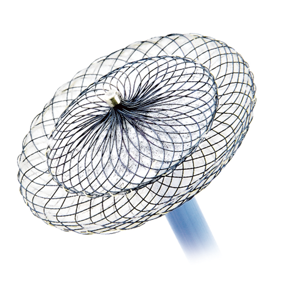
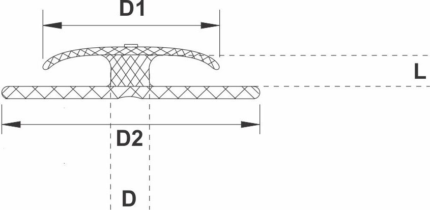
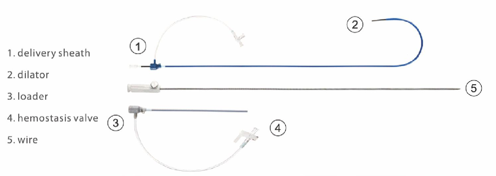
| Tamanho | Código do Produto | Diâmetro de Cintura | Diâmetro Disco Esquerdo | Diâmetro Disco Direito | Comp. de Cintura | Altura Cintura | Diâmetro da Guia de Níquel e Titâneo | Delivery Recomendado |
|---|---|---|---|---|---|---|---|---|
| 18 | P182832 | 1.8±0.5 | 18±0.5 | 18±0.5 | 3 | 3 | 0,1 | 8F - 45° |
| 25 | P243438 | 1.8±0.5 | 18±0.5 | 25±0.5 | 3 | 3 | 0,12 | 8F - 45° |
| 25/25 | P243438 | 2.5±0.5 | 25±0.5 | 25±0.5 | 3 | 3 | 0,1 | 8F - 45° |
| 30 | P304044 | 2.4±0.5 | 30±0.5 | 30±0.5 | 3 | 3 | 0,14 | 9F - 45° |
| 34 | P344650 | 2.3±0.5 | 25±0.5 | 35±0.5 | 3 | 3 | 0,14 | 10F - 45° |
| Sistema de Entrega (bainha) Tamanho | Diâmetro interno da bainha (mm) (Nominal) | Diâmetro externo da bainha (mm) (Nominal) | Comprimento efetivo (mm) (Nominal) |
|---|---|---|---|
| 5F | 1.83 | 2.31 | 856 |
| 6F | 2.16 | 2.64 | 856 |
| 7F | 2.49 | 2.97 | 856 |
| 8F | 2.82 | 3.33 | 856 |
| 9F | 3.15 | 3.66 | 856 |
| 10F | 3.48 | 3.99 | 856 |
| 12F | 4.17 | 4.70 | 856 |
| 14F | 4.83 | 5.38 | 856 |
O oclusor Evermend™ PDA é um dispositivo percutâneo e transcateter especialmente projetado para o fechamento de PDA (persistência do canal arterial).
Segundo a Valflux, o tratamento é viável inclusive em uma população pediátrica muito jovem. O dispositivo é produzido em malha de fio de nitinol moldada em um plug cilíndrico com flange para estabilização e posicionamento adequado.
Três peças de tecido de poliéster costuradas no interior ajudam a fechar o orifício e fornecem base para crescimento tecidual sobre o oclusor após a colocação.
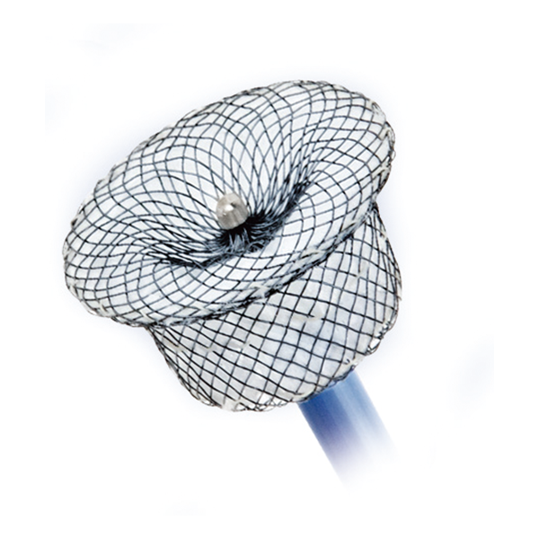
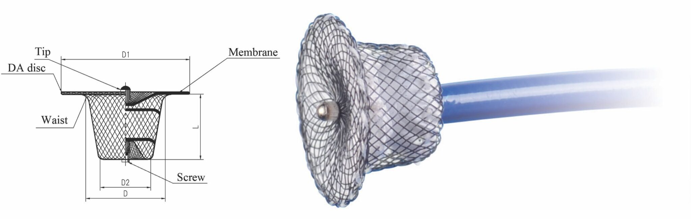
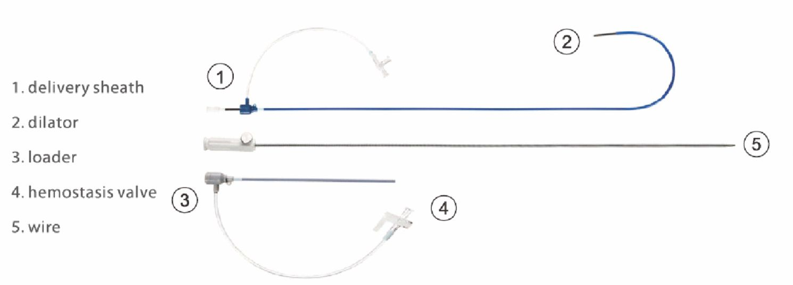
| Tamanho | Código do Produto | Diâmetro da Cintura D/mm | Diâmetro do Disco Esquerdo D1/mm | Diâmetro do Disco Direito D2/mm | Comprimento da Cintura L/mm | Bainha de entrega mínima recomendada |
|---|---|---|---|---|---|---|
| KW 04 | KW040610 | 6 | 10 | 4 | 7 | 6F - 180° |
| KW 06 | KW060812 | 8 | 12 | 6 | 7 | 6F - 180° |
| KW 08 | KW081014 | 10 | 14 | 8 | 7 | 7F - 180° |
| KW 10 | KW101216 | 12 | 16 | 10 | 7 | 8F - 180° |
| KW 12 | KW121420 | 14 | 20 | 12 | 7 | 8F - 180° |
| KW 14 | KW141622 | 16 | 22 | 14 | 8 | 8F - 180° |
| KW 16 | KW161824 | 18 | 24 | 16 | 8 | 9F - 180° |
| KW 18 | KW182026 | 20 | 26 | 18 | 9 | 10F - 180° |
| KW 20 | KW202228 | 22 | 28 | 20 | 9 | 12F - 180° |
| KW 22 | KW222430 | 24 | 30 | 22 | 10 | 12F - 180° |
| Sistema de Entrega (bainha) Tamanho | Diâmetro interno da bainha (mm) (Nominal) | Diâmetro externo da bainha (mm) (Nominal) | Comprimento efetivo (mm) (Nominal) |
|---|---|---|---|
| 5F | 1.83 | 2.31 | 856 |
| 6F | 2.16 | 2.64 | 856 |
| 7F | 2.49 | 2.97 | 856 |
| 8F | 2.82 | 3.33 | 856 |
| 9F | 3.15 | 3.66 | 856 |
| 10F | 3.48 | 3.99 | 856 |
| 12F | 4.17 | 4.70 | 856 |
| 14F | 4.83 | 5.38 | 856 |
Os oclusores Evermend™ VSD são projetados para a oclusão percutânea e transcateter de defeitos do septo ventricular (VSD).
De acordo com a Valflux, a linha contempla duas variações principais: oclusor peri-membranoso VSD e oclusor muscular VSD. A estrutura do produto é fabricada com fio de nitinol e costurada com três pedaços de tecido de poliéster.
O modelo peri-membranoso é voltado a defeitos ao redor da parte membranosa do septo ventricular, enquanto o modelo muscular apresenta estrutura apropriada para acomodar a porção mais espessa do septo ventricular.
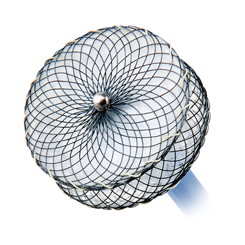
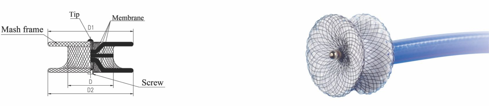
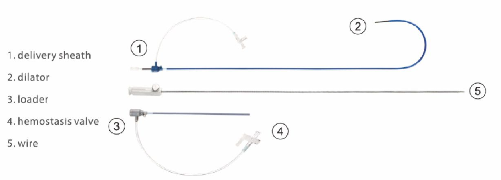
| Tamanho | Código do Produto | Diâmetro da Cintura D/mm | Diâmetro do Disco Esq. D1/mm | Diâmetro do Disco Dir. D2/mm | Comprimento da Cintura L/mm | Bainha de entrega Mínima recomendada |
|---|---|---|---|---|---|---|
| KWV 04 | KWV040808 | 4 | 8 | 8 | 3 | 6F - 180° |
| KWV 05 | KWV050909 | 5 | 9 | 9 | 3 | 6F - 180° |
| KWV 06 | KWV061010 | 6 | 10 | 10 | 3 | 7F - 180° |
| KWV 07 | KWV071111 | 7 | 11 | 11 | 3 | 7F - 180° |
| KWV 08 | KWV081212 | 8 | 12 | 12 | 3 | 8F - 180° |
| KWV 09 | KWV091313 | 9 | 13 | 13 | 3 | 8F - 180° |
| KWV 10 | KWV101414 | 10 | 14 | 14 | 3 | 8F - 180° |
| KWV 12 | KWV121616 | 12 | 16 | 16 | 3 | 9F - 180° |
| KWV 14 | KWV141919 | 14 | 19 | 19 | 3 | 10F - 180° |
| KWV 16 | KWV162121 | 16 | 21 | 21 | 3 | 10F - 180° |
| KWV 18 | KWV182323 | 18 | 23 | 23 | 3 | 12F - 180° |
| KWV 20 | KWV202525 | 20 | 25 | 25 | 3 | 12F - 180° |
| KWV 22 | KWV222727 | 22 | 27 | 27 | 3 | 12F - 180° |
| KWV 24 | KWV242929 | 24 | 29 | 29 | 3 | 12F - 180° |
| Tamanho | Código do Produto | Diâmetro da Cintura D/mm | Diâmetro do Disco Esq. D1/mm | Diâmetro do Disco Dir. D2/mm | Comprimento da Cintura L/mm | Bainha de entrega Mínima recomendada |
|---|---|---|---|---|---|---|
| KWV 04 | KWV041010 | 4 | 10 | 10 | 7 | 6F - 180° |
| KWV 05 | KWV051111 | 5 | 11 | 11 | 7 | 6F - 180° |
| KWV 06 | KWV061212 | 6 | 12 | 12 | 7 | 7F - 180° |
| KWV 07 | KWV071313 | 7 | 13 | 13 | 7 | 7F - 180° |
| KWV 08 | KWV081414 | 8 | 14 | 14 | 7 | 8F - 180° |
| KWV 09 | KWV091515 | 9 | 15 | 15 | 7 | 8F - 180° |
| KWV 10 | KWV101616 | 10 | 16 | 16 | 7 | 8F - 180° |
| KWV 12 | KWV121818 | 12 | 18 | 18 | 7 | 9F - 180° |
| KWV 14 | KWV142020 | 14 | 20 | 20 | 7 | 10F - 180° |
| KWV 16 | KWV162222 | 16 | 22 | 22 | 7 | 10F - 180° |
| KWV 18 | KWV182424 | 18 | 24 | 24 | 7 | 12F - 180° |
| KWV 20 | KWV202626 | 20 | 26 | 26 | 7 | 12F - 180° |
| KWV 22 | KWV222828 | 22 | 28 | 28 | 7 | 12F - 180° |
| KWV 24 | KWV243030 | 24 | 30 | 30 | 7 | 12F - 180° |
Os oclusores Evermend™ estão relacionados a procedimentos percutâneos e transcateter para fechamento de defeitos cardíacos estruturais em cardiologia congênita e pediátrica, sempre conforme indicação médica, planejamento do procedimento e documentação oficial do fabricante.
Fechamento percutâneo e transcateter de defeito do septo atrial secundário e casos específicos de fenestração de Fontan.
Tratamento transcateter do fechamento de forame oval patente.
Fechamento percutâneo de persistência do canal arterial, inclusive em população pediátrica jovem.
Oclusão percutânea e transcateter de defeitos do septo ventricular, em versões peri-membranosa e muscular.
Aplicações voltadas a procedimentos estruturais em cardiologia congênita e pediátrica.
Utilização em abordagens percutâneas e transcateter, conforme avaliação médica especializada.
Entre em contato com a equipe Life Solutions para conhecer detalhes técnicos, disponibilidade e formas de atendimento.